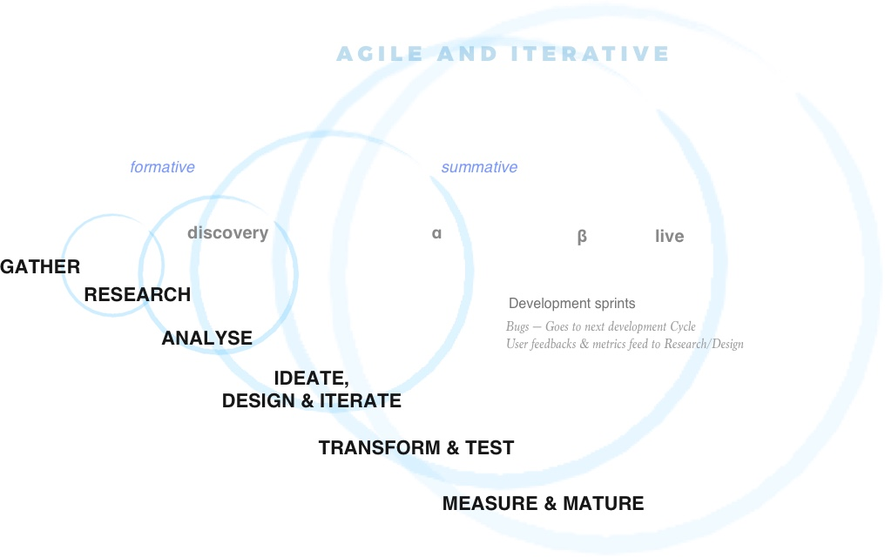
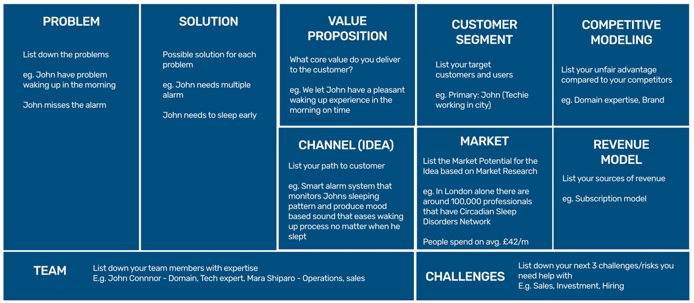
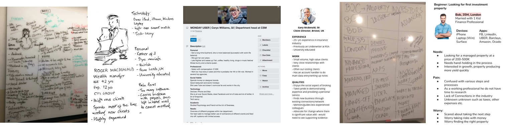
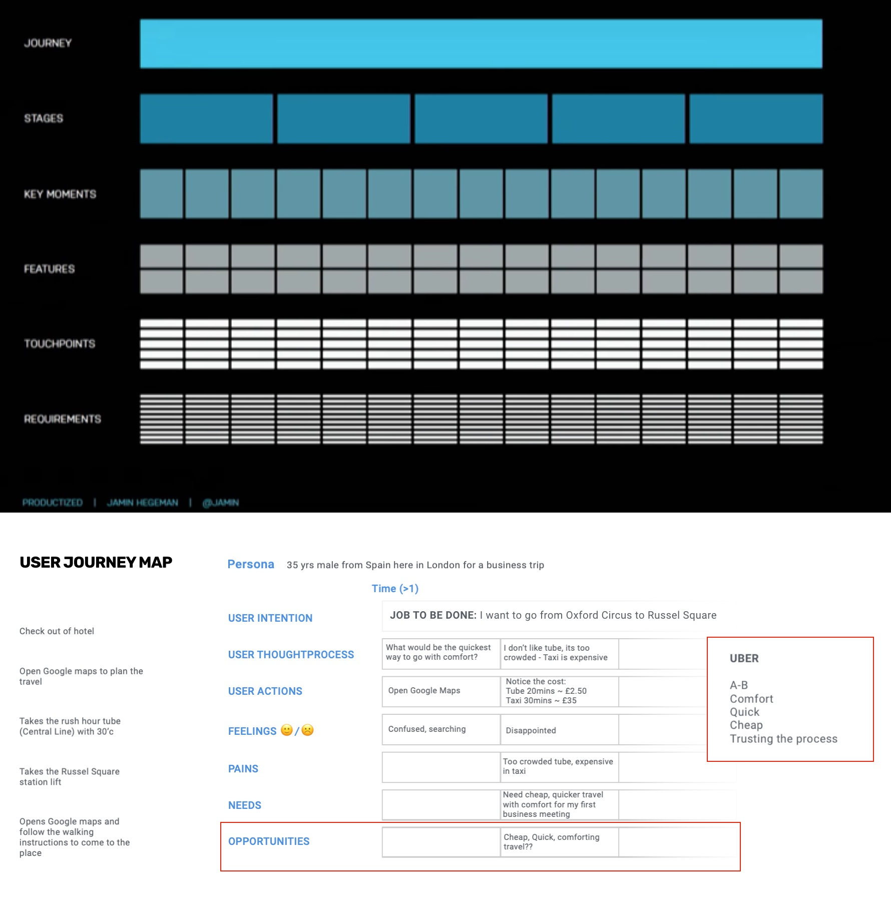
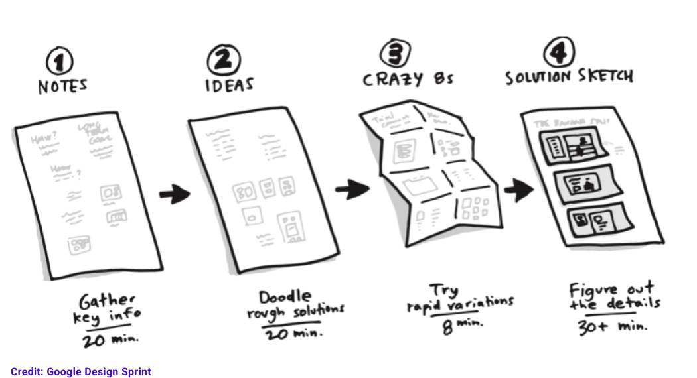
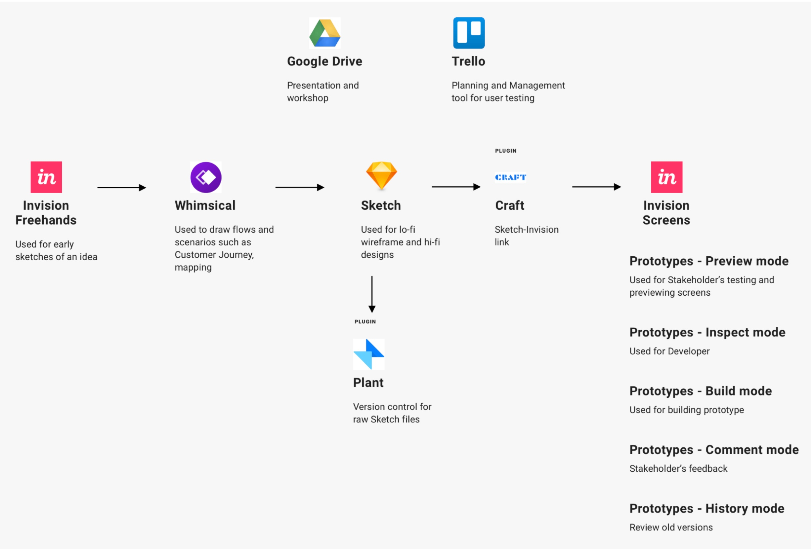

My Design Process
While no two design challenges are the same nor approaching it in the same way would provide us the best results. However, there is an underlying structure that I follow to keep me focused, resilient, creative and humble.
It’s based on my own academic and professional experience, working and learning from design thoughtleaders such as Yuvvone Rogers, Don Norman, Jacob Nilsen, Kristina Höök, Ben Shneiderman etc.. The main highlights are drawn upon from concepts such as JTBD (Job To Be Done), lean and agile methodologies, asking the right questions, identifying user pain points and contextual investigation.
Although the nature of the design process is presented in a sequential manner, it is iterative and there is a level of flexibility to align the process based on the suitability of the project.

GATHER
Understanding the context (intend)
I begin by gaining insights of the business vision, goal and objectives of the brand. I use a variant of the lean canvas to gather the key information including the problem/challenge and customer segment (user).
Understand the competitor landscape
I use a petal diagram or a 2X2 Matrix to identify the direct and indirect competitions. This provides us insights on where the brand sits, customers reaction to them, preparation for customer interaction and potentially this kind of comparative analysis provides innovative ideas during the ideation stage.
Defining metrics
The above steps provides us with hypothesis to be tested and helps us define the intial success metrics. This ensures all stakeholders are aligned with key aims and expectations before moving into the design stage.
Practicalities and limitations
Finally before moving to the research phase, it is important that I am made aware of any deadlines, upcoming launch, any communication protocols with stakeholders, organisational structure etc.
Gaining domain knowledge
I learn about the core domain so that it could equip me with the industry specific jargons to interact with the users
RESEARCH
Any previous research
I try to find out if there is any previous (formative/summative) research work being conducted (market/user research, competitor analyses, etc.) and analytics data (incase of an existing product) as this would help in adding to the hypothesis.
Interacting with the users
Initial research will help to test the assumptions. Interacting with users gives me insights on their day to day life, their needs and pain points. I do this by running qualitative studies such as interviews, ethnographic studies, observations, survey, guerilla testing etc.
Expert evaluation/Content Audit
Incase a proof of concept/MVP/Product is already being built, I would run expert evaluation technqiues such as cognitive walkthrough, heuristic evaluation, tree testing, content audits to create awareness of the designs, content consistency and flow.
ANALYSE
Empathy// Becoming the user
The research provides solutions to the hypothesis. Such as if we are targeting the right user. User persona and empathy map are created based on the profiles identified creating user empathy. 
Statistical Analysis
If the analytics are in place for an existing product, I go through them to find trends and patterns and to understand the user funnel. This could be fed back into the following journey map
Mapping the data
Creating user journey and service blueprint helps visualise the mental model in a multi-dimensional way and shows the different touchpoints critical to the user job to be completed. 
Key findings & reframing intention
Once we map out our data from the research and analysis, we organise the findings, clarify the purpose and redefine the intent to guide the next phase of creative thinking and design exploration.
IDEATE, DESIGN & ITERATE
Generating ideas
By the process of diverging and converging we explore, develop and iterate creative ways of solving the problem, regardless of feasibility.
Inspired by Google design sprints and lean startup, I run series of collaborative workshops that involves How Might We questions and brainstorming solutions. Affinity diagram is used as the common analysing technique and open critique sessions are used to prioritise and resolve conflicting design ideas.

Lo-fi prototyping and iteration
The outcomes from the workshop are captured and translated into low fidelity prototype(s) that can be tested with users for feedback. I do this by early sketches, sitemaps, mockups, user flow and other visuals, moving into creating wireframes to set the overall direction and description for the prototype and feedbacks.
Information architecture
Once the wireframe had few rounds of feedback I go through the content and make sure it aligns with the brand, tone of voice and familiar & consistent to the user. Card sorting is a common technqiue I use to create a coherent labelling.
TRANSFORM & TEST
Design the experience (Agile)
Based on the evidence based research and business goals we prioritise design features and plan to implement it into agile sprints.
User interface design & best practices
Designing effective interface needs strong foundations and guidelines. After going through platform specific guidelines, I map out the foundational interface guidelines, workflow, pattern library etc. to establish the design system. This continues to designing the hi-fi interface and interactions.
Evaluative user research
I conduct user testing such as scenario based participatory evaluation with target personas to capture behaviours and not opinions. This is achieved by involving the team in outlining an analysis matrix with specific assumptions/outcomes that are tested and rated with severity points for further improvement.
MEASURE & MATURE
Analytics data and Customer feedback Once the design is live, continuous feedback is recorded and measured by statistical analysis of data as well as involving the customer support team for qualitative data.
Improving on design As the design evolves and matures, I use techniques such as A/B testing, Multivariate testing to make decisions.
The design process I follow has six (6) phases, following is quick summary:
- GATHER: Gathering requriments
- RESEARCH: Exploring user needs and pain-points
- ANALYSE: Establishing empathy and extracting key evidence
- IDEATE, DESIGN & ITERATE: Refining solution, creating meaningful design and information flow
- TRANSFORM & TEST: High-fidelity Designs/Interaction Design and evaluation
- MEASURE & MATURE: Review metrics and track usage to mature design
